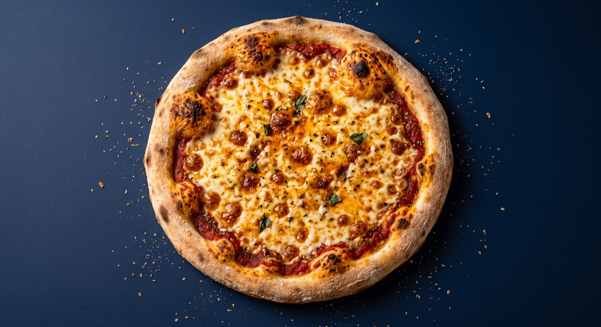

Home
Burger

Description
By the end of this recipe you will have a tasty and memorable pizza
recipe to take anywhere with you. This recipe requires little preparation,
but has an outcome of a tasty meal.
This recipe is for a traditional neapolitan style pizza with a thin, chewy
crust, topped with just tomato sauce, fresh mozzarella and basil. The result has
a crisp, blistered edge, gooey melted cheese and bright herby freshness from the basil.
Ingredients
- Bread Flour
- Warm Water
- Instant Yeast
- Salt
- Olive Oil
- Canned tomatoes
- Clove of garlic
- Fresh mozzarella, in pieces
- Basil leaves
- Extra virgin olive oil
- Salt to taste
Steps
- Combine flour, water, yeast and salt in a bowl.
- Mix until a shaggy dough forms
-
Knead for 8-10 minutes until smooth and elastic,
add olive oil half way through.
- PLace dough in an oiled bowl, cover and let rise for 1-2 hours until doubled.
- Divide into 2 balls, shape and let rest for 20-30 minutes.
- Preaheat oven to its highest setting, atleast 250 celcius
- Stretch dough intoo a round, leaving a thicker edge for the crust.
- Spread crushed tomatoes thinly, leaving border bare.
- Top with torn mozzarella pieces.
- Bake 8-12 minutes until the curst is blistered and golden.
- Remove, top with fresh basil leaves, and a drizzle of olive oil.